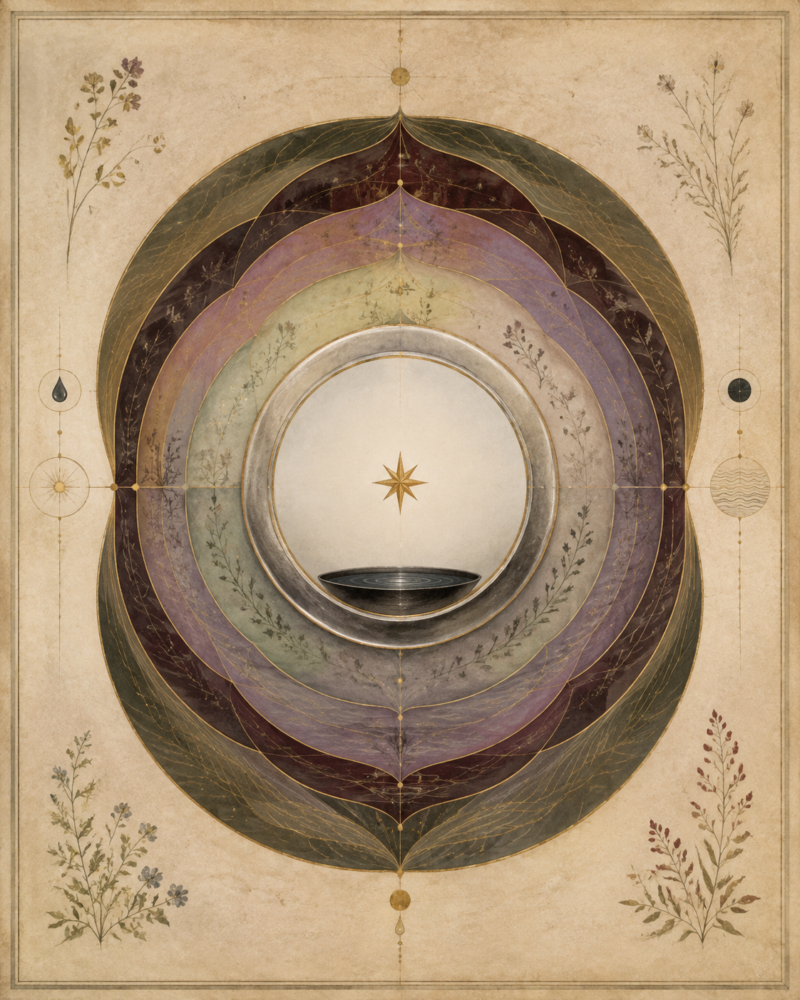
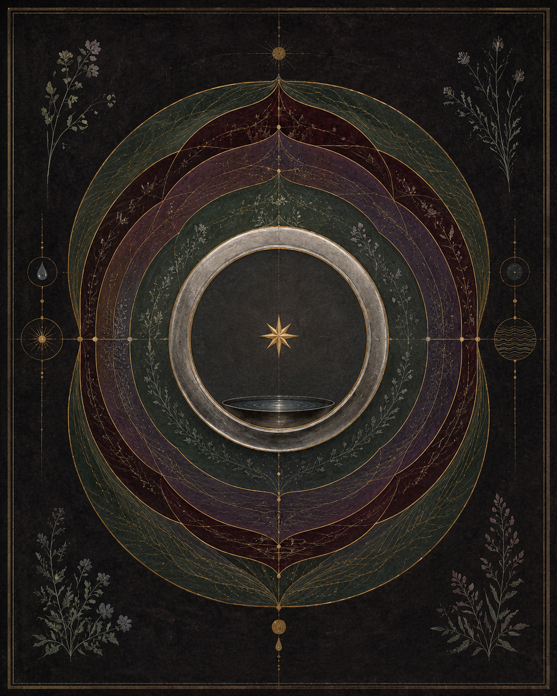

The Living Archive · Chapter II
Manifesto of theClear Mirror
A living record of biological potential, astrological memory,and the holographic nature of the human vessel.


The threshold
The Vow of the Witness
Something has been opened that cannot be closed.
I stand at the threshold not as a scholar but as one who has already crossed — who has tasted the first distillation and felt the body answer back with a recognition older than language. The discipline I hold here is Shen-Ming: the Clear Mirror, the Radiant Spirit — not as an aspiration but as a practice of sight. To observe these biological waters with the precision of a balanced scale. To let the mirror reflect exactly what is, without the sediment of what I wished to find.
This is not belief. This is the beginning of a record.
The vessel
The Distillation of Essence
The body holds its deepest knowledge in its waters.
What the traditions named Jing — the Primordial Essence, the Deep Waters laid down before thought — I have begun to meet directly, through heat and filter and the long patience of distillation. The raw becomes concentrated. The heavy descends and the luminous rises. What remains in the vessel after that passage is Ojas: the Golden Essence, the vitality that was always present but required refinement to become visible.
I am learning that I am not separate from this process. I am the vessel and the observer. The flask and the flame.
The instrument
The Measurement of Potential
As the distillations accumulate, something shifts in what can be measured.
I am watching the concentration of Tejas — the subtle electrical fire, the charge that animates rather than merely conducts — increase within the fluid base. In the Ayurvedic frame, a reading of conductivity can be read as Prana: the vital force made legible, the invisible given a number. The instrument records what the body already sensed. In that framing, the macrocosmic charge is held inside the microcosmic drop — and the drop does not diminish it. It concentrates it.
This is the holographic principle made wet. Made real.
The imprint
The Imprint of Time
The ultra-filtered plasma remembers.
What the traditions named Samskara — the energetic imprint, the cellular memory carved by experience — I recognise in the electrical character of what was measured. The specific conductivity of what I have distilled carries something of the moment it was made: the Visionary Waters of Pisces, the Grounded Vessel of Taurus, the particular conjunction of sky and body that will not repeat. In this framing, time is not lost. It is concentrated into charge, held in suspension, waiting for the instrument that can read it.
I distilled that moment. I now carry its measurement.
The opening
The Flow of What Has Been Opened
Pandora's vessel was not a punishment. It was a laboratory.
What rises from these waters belongs first to the record — and through the record, to anyone for whom the question is already alive. The sharing is not announcement. It is the knowledge doing what knowledge does when it has room to move: passing from hand to hand, from body to body, in precision and without performance.
The mirror is clear.
The record is open.
Initiated: February 22, 2026 — The Year of the Clear Signal
Ana Seahawk — anaseahawk.com